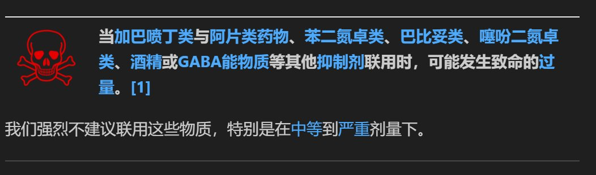

这一个药物联用警告，在psychonautwiki上的每一个有关页面的醒目位置上都有，然而又多少人真正放在心上的，又有多少人心存侥幸？假如这个警告不重要，为什么要放在每一个页面上，为什么要放这么大一个红骷髅头？
现在我把这警告也搬到FreeODwik上了，请大家尽情享用
如果你不能珍爱生命，请远离毒品

现在我把这警告也搬到FreeODwik上了，请大家尽情享用
如果你不能珍爱生命，请远离毒品

不过这也不是完全给救人者脱罪了，此人过量很可能与救人者有关联。
死者在推特上多次发布自己准备的药物过量反制剂，且已知事故当时二人都在死者家中。死者很可能是相信对方会使用自己的反制剂来救自己，才有胆量玩得这么脱。
即便如此，过量服药、不当联用，创造不利局面的不是别人，正是死者自己。
死者在推特上多次发布自己准备的药物过量反制剂，且已知事故当时二人都在死者家中。死者很可能是相信对方会使用自己的反制剂来救自己，才有胆量玩得这么脱。
即便如此，过量服药、不当联用，创造不利局面的不是别人，正是死者自己。